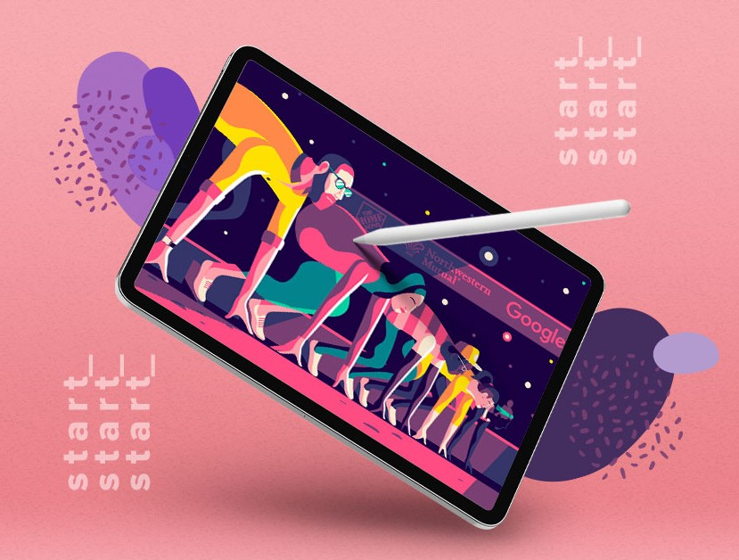

Para mí el diseño gráfico es un saber, en el cual mostramos la comunicación y la información de una forma diferente, proporcionando información visual, siendo así medio de comunicación visual. Es la carrera de concebir proyectar y realizar el soporte qué sirve de vehículo de comunicaciones visuales, producidas, generalmente, por medios industriales y que tienen como objetivo transmitir mensajes específicos a grupos o destinarios determinados. Laura el diseño gráfico tiene que cumplir con los propósitos comunicativos establecidos previamente, con un interés estético.